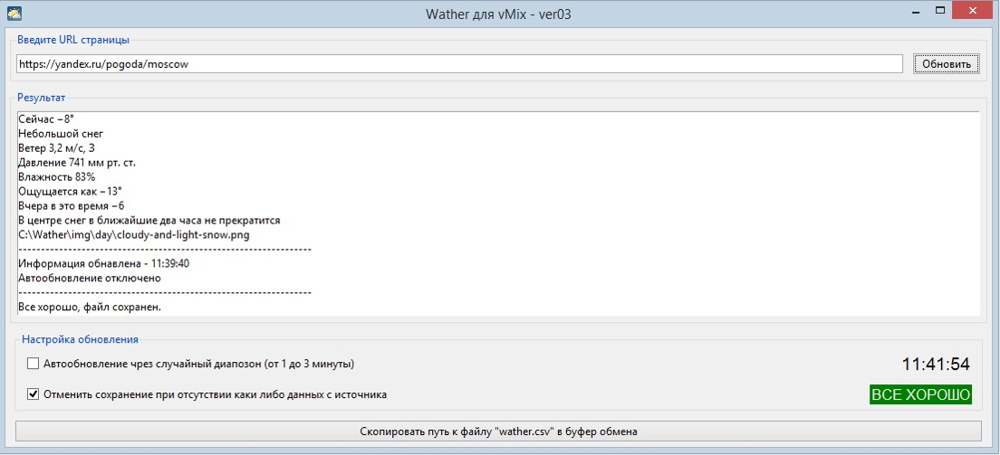

Все данные парсятся с сайта www.yandex.ru. Данные вывода сохраняются в формате CSV. Данное приложение написанно для использование в программе "vMix" для вывода погоды на экран (для интернет трансляций и др.). Приложение написанно с использованием языка Python3 и были сипользованны следующие б иблиотеки: Tkinter - это графическая библиотека на основе Tk, Beautiful Soup 4 - это парсер для синтаксического разбора файлов HTML/XML, Requests - выполняет HTTP-запросы.
Данное приложение даёт возможность получить 9 информационных значений которые можно использовать по необходимости, все зависит от задачи и вашего шаблона титров созданного в vMix. Приложение генерирует ссылку на изображение, это иконки статуса погоды (пасмурно или облачно). Иконки рассположены в папке "img" где есть еще две папки "day" и "night"(день и ночь). Смена дня и ночи наступает в 19.00.
Вы используете данный программный продукт на свой страх и риск.
По всем вопросам и предложениям пишите на почту ItPython@yandex.ru